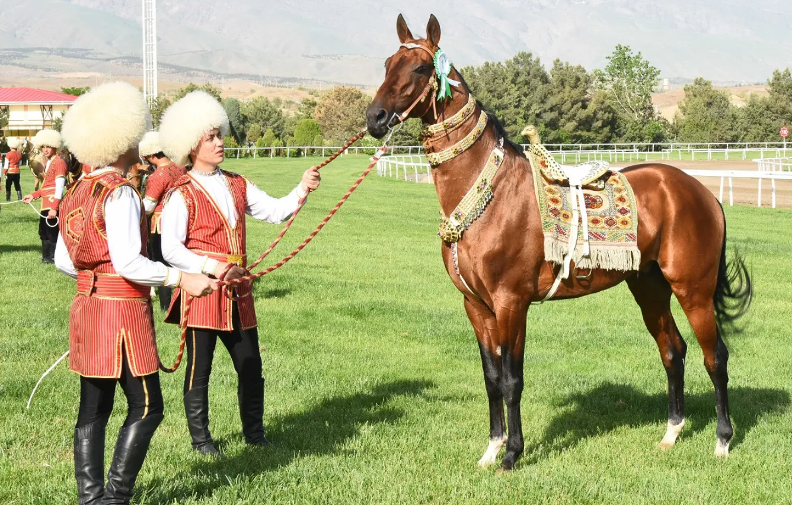
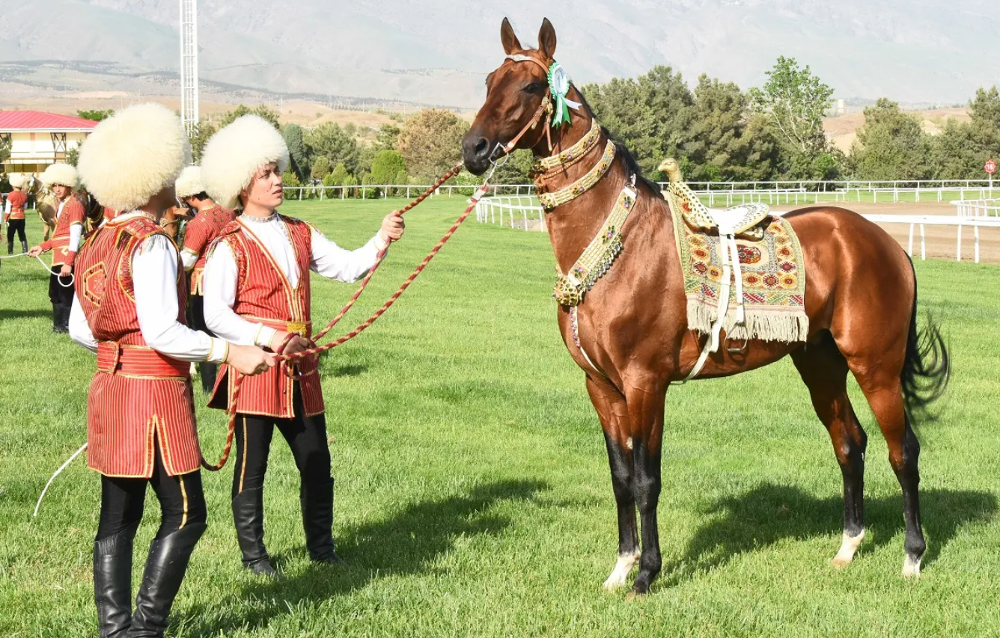
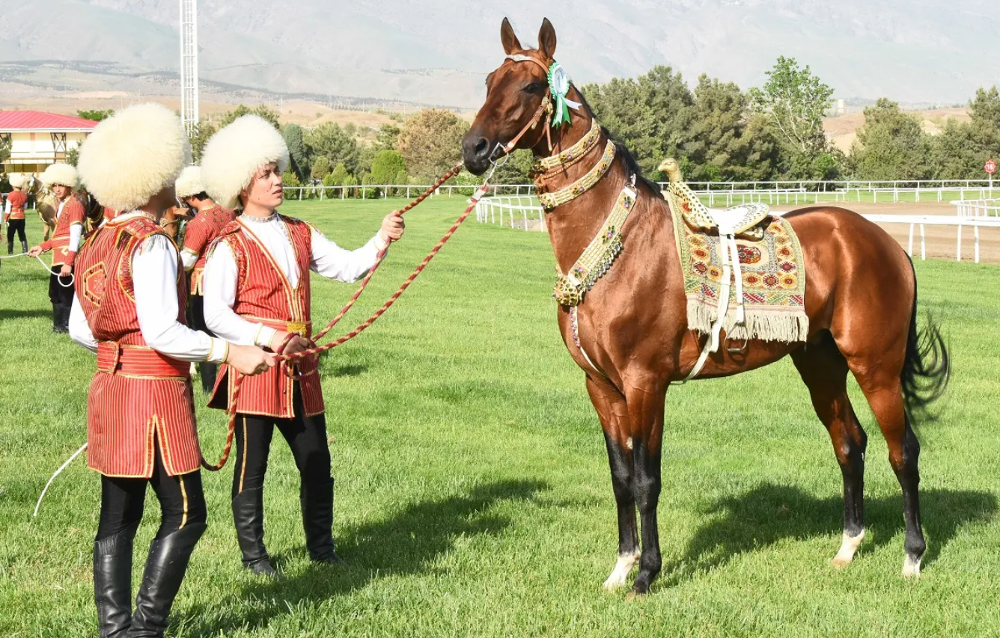

The Akhalteke is a Turkmen horse breed.
They have a reputation for speed and endurance, intelligence, and a distinctive metallic sheen.
The shiny coat of the breed led to their nickname, "Golden Horses".
These horses are adapted to severe climatic conditions and are thought to be one of the oldest existing horse breeds.
There are currently about 6,600 Akhal-Tekes in the world, mostly in Turkmenistan, although they are also found throughout Europe and North America.
Akhal is the name of the line of oases along the north slope of the Kopet Dag mountains in Turkmenistan. It has been inhabited by the Tekke tribe of Turkmens.
Akhal-Teke horses have a long and storied history in Turkmenistan, dating back thousands of years.
These horses are known for their beauty, endurance, and speed, making them highly prized animals.
The Akhal-Teke breed is believed to have originated in the Karabakh region of Turkmenistan,
where they were developed by the Teke tribe.
These horses played a significant role in the culture and daily life of the Turkmen people,
serving as symbols of prestige and wealth.
The ancestors of the Akhal-Teke horses are thought to have been brought to the region by nomadic tribes migrating
from Central Asia around 3000 BC. Over the centuries,
the breed was refined and selectively bred for its unique characteristics, resulting in the elegant horses we see today.
In the 20th century, the Akhal-Teke breed faced challenges due to war and political instability in the region.
However, efforts were made to preserve and promote the breed, leading to its recognition and popularity worldwide.
Today, the Akhal-Teke horse remains a source of national pride for Turkmenistan,
symbolizing the country's rich equestrian heritage and cultural identity.
The Akhalteke is of medium size, usually standing some 144 to 160 cm at the withers,
with a weight between 430 and 500 kg.
Coat colors vary widely: the most frequent are bays (about 40%), duns (about 22%), blacks (about 12%) and chestnuts (about 11%);
other colors include grey, cream and yellow.
The coat often has a characteristic metallic sheen, which in duns may produce an unusual golden effect;
it is sometimes claimed that this provided camouflage in the desert.
